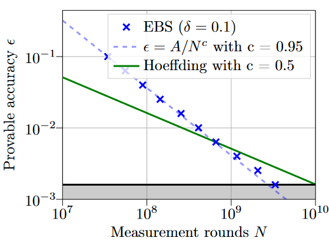

Home | About Thesis | EBS Code
About my Thesis
The title of my bachelor thesis was "Adaptively measuring quantum expectation values using the empirical Bernstein stopping rule".
We looked at an application of the empirical Bernstein stopping rule (EBS) in the context of quantum computing.
The goal was to explore a new method to estimate quantum expectation values with a required accuracy ε and confidence of 1-δ while minimizing the amount of shots needed.

In the above figure we see the EBS algorithm compared against Höffdings inequality, in the context of measuring the ground state energy of NH3.
We set the accuracy ε to the chemical accuracy, i.e. 0.0016 Hartee.
This accuracy is choosen such that subsequent calculations still yield realistic chemical accuracies.
Here EBS outpeforms, i.e., requires less samples for an estimate than Höffdings.